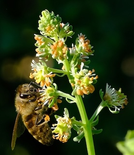
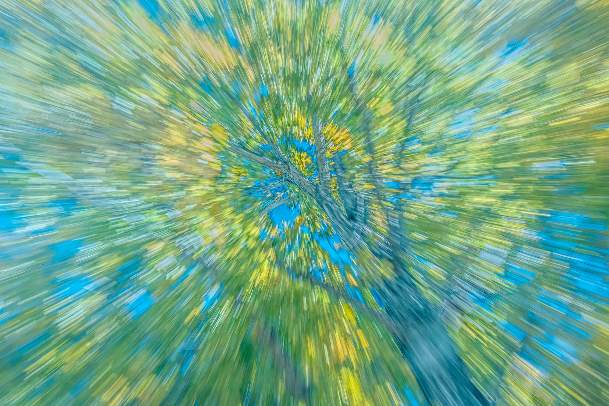

Portfolio
Browse the local photo albums below. Each album opens from this workspace so you can access Bugs, ME, and abstract2 directly. You can also try the hosted portfolio here: portfolio.michaelbirdphotography.com

